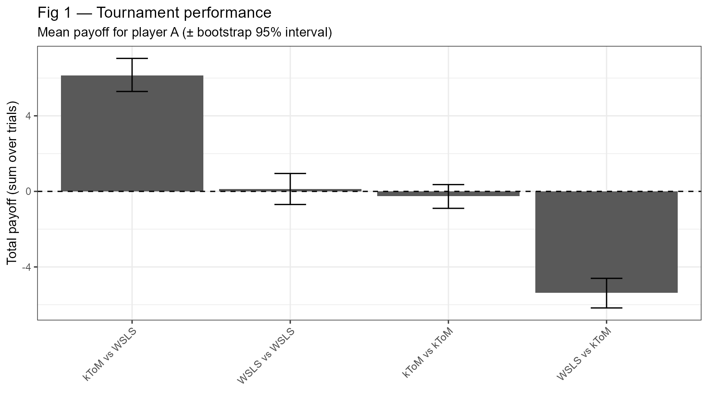
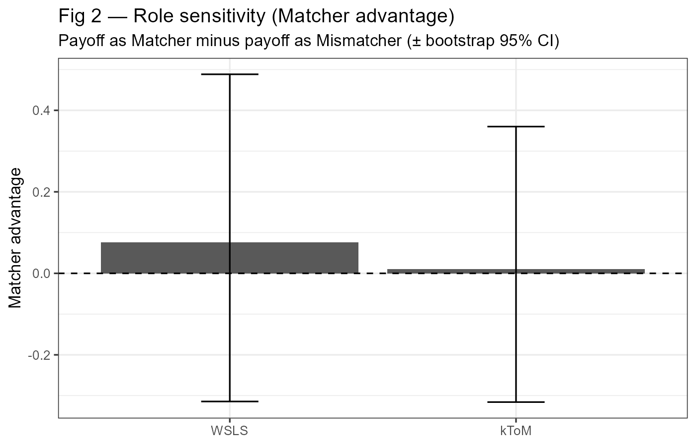
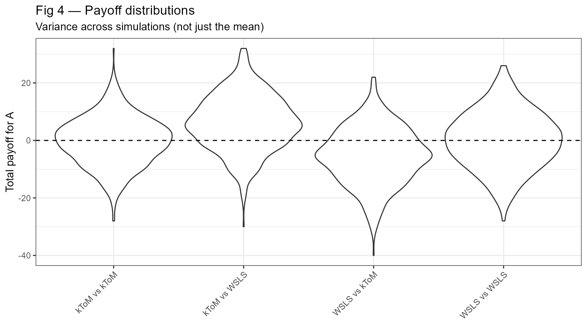
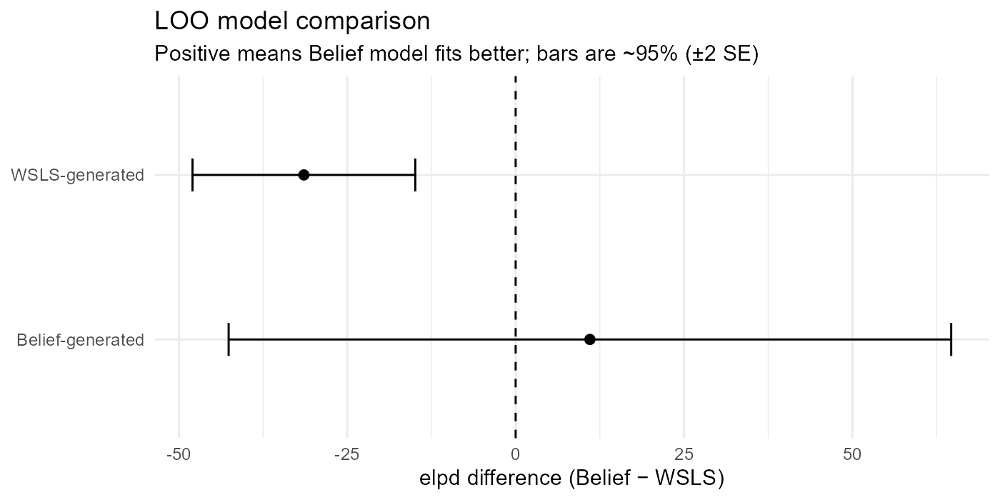
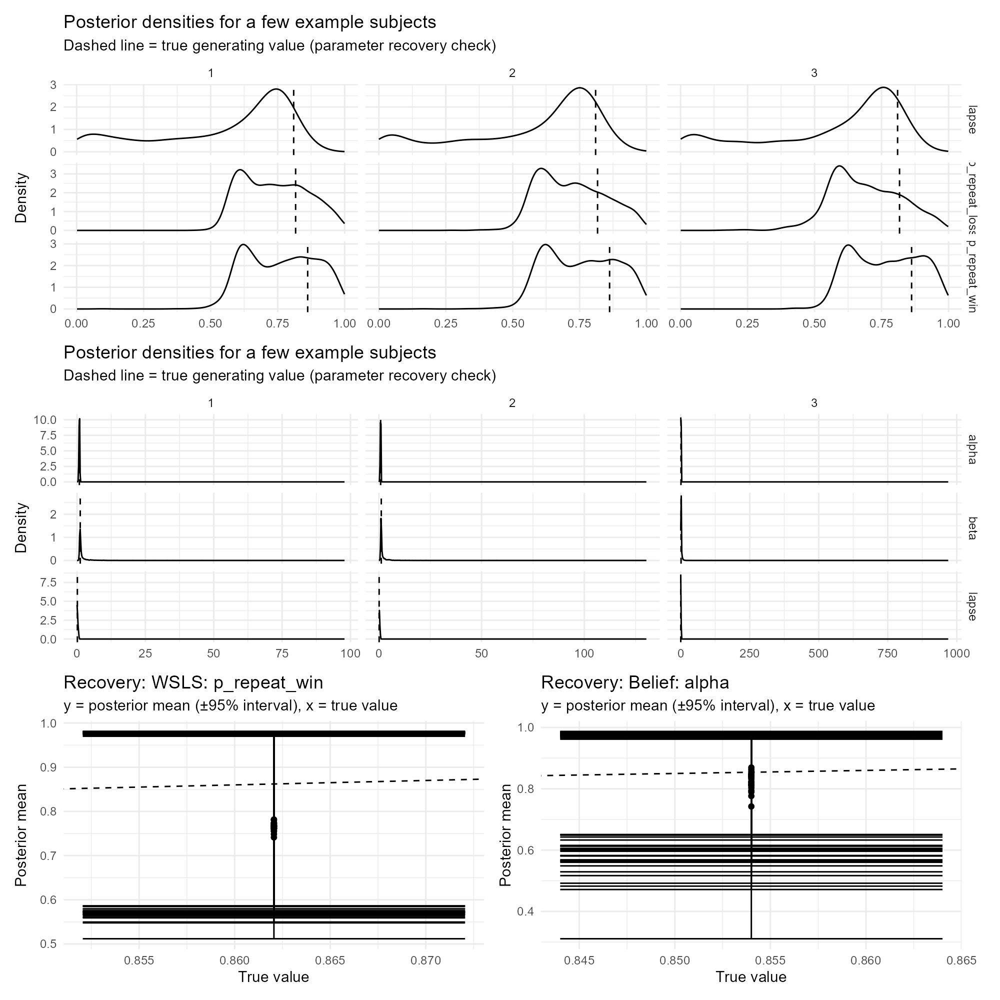

flowchart LR
A[Player A] -->|action a_t| G((Game))
B[Player B] -->|action b_t| G
G --> O{Match? a_t==b_t}
O -->|Yes| R1[If A is Matcher: A wins<br/>If A is Mismatcher: A loses]
O -->|No| R2[If A is Matcher: A loses<br/>If A is Mismatcher: A wins]
Assignment 1 — Matching Pennies: WSLS vs k-ToM-inspired belief learning
1 What this assignment does
This document (i) describes two cognitively plausible strategies for repeated Matching Pennies, (ii) formalises them as executable rule-based models (diagrams + equations), and (iii) evaluates their behaviour in simulation. Finally, it treats the strategies as mechanistic statistical models and checks whether they are distinguishable when fit to data (here: synthetic data).
Repository (all code, simulations, figures, reproducibility):
- https://github.com/ramona-tanovic/ACM.git
The relevant folder is assignment1/.
2 Data + figures used in this write-up
This document reads the CSV outputs produced by assignment1/run_all.R and inserts the key numbers directly into the text (so the narrative stays consistent if you re-run the pipeline).
3 The game and protocol
Matching Pennies is a two-player, zero-sum game. On each trial both players choose an action (Left/Right). One player is the Matcher (wins if actions match), the other is the Mismatcher (wins if actions differ).
In the repeated task, roles swap halfway through the block. That swap is cognitively informative: it tests whether a strategy merely reacts to reinforcement history or whether it represents the current contingency (what counts as “good” right now).
In the simulations used for the figures in this document, there are (T = )100 trials per match, and the role swap is at trial (50).
4 Strategy 1: Win–Stay / Lose–Shift (WSLS)
4.1 Intuition
WSLS is a classic reinforcement heuristic:
- If the previous action led to a win, repeat it.
- If it led to a loss, switch.
It is cognitively plausible because it only requires one-step memory and a simple if/else rule. It does not need a representation of the opponent or of the game structure.
4.2 Formalisation
Let (a_{t-1}) be the previous action and (w_{t-1}{0,1}) indicate whether the agent won last trial.
Parameters: - (p_{}): repeat after win - (p_{}): repeat after loss (often low in WSLS) - (): lapse/noise: with probability (), choose randomly
flowchart TD
S0["Observe last outcome w(t-1) and last action a(t-1)"] --> L{"Lapse? (prob = l)"}
L -->|Yes| R["Choose action uniformly at random"]
L -->|No| W{"Was last trial a win?"}
W -->|Win| P1["Repeat a(t-1) with prob p_repeat_win<br/>else switch"]
W -->|Loss| P2["Repeat a(t-1) with prob p_repeat_loss<br/>else switch"]
4.3 Cognitive constraints (WSLS)
WSLS is a bounded-memory, low-computation control policy. It is a plausible “default heuristic” when agents cannot or do not build an internal model of the opponent or task.
The key limitation is that it cannot condition explicitly on the match/mismatch goal. It only changes by accumulating reinforcement feedback, so any re-mapping after the role swap is indirect and may lag.
5 Strategy 2: k-ToM-inspired belief learning (kToM)
5.1 Intuition
This strategy maintains a simple belief about the opponent’s action tendency and updates that belief from observations. It is “k-ToM-inspired” in that the agent behaves as if the opponent has a stable (possibly biased) policy and tries to exploit it.
It remains cognitively constrained: rather than storing the full history, it compresses experience into a single belief state and updates incrementally.
5.2 Formalisation
Let (p_t = P(b_t = 1)) be the belief that the opponent will choose action 1.
Belief update: [ p_{t+1} = (1-),p_t + ,b_t, ] where (0<<1) controls recency weighting.
Choice uses an inverse temperature () (sharper exploitation for larger ()) and a lapse (). Crucially, action selection is conditioned on role: - Matcher: choose the action that matches the predicted opponent action - Mismatcher: choose the opposite action
flowchart TD
O1["Observe opponent action b(t)"] --> U["Update belief p(t+1) = (1-alpha)*p(t) + alpha*b(t)"]
U --> R{"Role at trial t+1?"}
R -->|Matcher| D1["Choose to match predicted opponent<br/>strength set by beta"]
R -->|Mismatcher| D2["Choose to mismatch predicted opponent<br/>strength set by beta"]
D1 --> L{"Lapse? (prob = l)"}
D2 --> L
L -->|Yes| Rand["Choose randomly"]
L -->|No| Act["Take action a(t+1)"]
5.3 Cognitive constraints (kToM)
This model adds a minimal internal state (belief (p_t)). That increases cognitive demands relative to WSLS but still reflects bounded resources: the entire history is summarised by one scalar belief, updated with a single learning-rate parameter.
Because the goal is represented explicitly (match vs mismatch), the model can re-map actions when roles swap without waiting for long reinforcement transients.
6 Implementation logic: executable rule-based models
Both strategies are implemented as “model objects”: a parameter vector plus a choice rule and an update rule. This is the core modelling move in rule-based cognitive modelling: the hypothesis is expressed as an executable procedure that generates behaviour, not just as a verbal description.
7 Simulation design
We run a tournament of pairings (each strategy against itself and against the other). For each pairing we simulate (600) matches. To capture heterogeneity, each simulated agent samples parameters from the Stan prior and plays one match with those parameters.
The pipeline saves: - trial-level output (trials.csv) for learning curves, - match-level summaries (matches.csv) for tournament outcomes, - per-player summaries (players.csv) for role effects and behavioural signatures, - LOO outputs (loo_dot.csv, loo_comparison_table.csv) for model comparison.
8 Results: behaviour in tournament simulations
8.1 Fig 0 — Trial dynamics and the role swap

Interpretation:
This figure shows mean cumulative payoff for player A over trials (ribbon = ±1 SE). The dashed vertical line marks the role swap.
What this plot is for (cognitively): - It reveals dynamics: does an advantage emerge early, slowly, or only after the swap? - It shows adaptation costs: if a strategy needs reinforcement to re-tune after the swap, you often see a transient kink or change in slope around the swap. - It separates “overall win” from “how the win was achieved”.
8.2 Fig 1 — Tournament performance (who beats whom?)

To make the figure interpretable as evidence, here are the exact mean payoffs and bootstrap 95% intervals (same summary the bars represent):
| Pairing (A vs B) | Mean payoff A | CI low | CI high | Mean payoff (first half) | Mean payoff (second half) | Mean swing (second-first) |
|---|---|---|---|---|---|---|
| kToM vs WSLS | 6.14 | 5.35 | 6.93 | 3.20 | 2.94 | -0.25 |
| WSLS vs WSLS | 0.13 | -0.67 | 0.91 | -0.06 | 0.19 | 0.26 |
| kToM vs kToM | -0.25 | -0.96 | 0.43 | -0.32 | 0.07 | 0.39 |
| WSLS vs kToM | -5.37 | -6.18 | -4.57 | -2.40 | -2.97 | -0.56 |
Interpretation:
This is the headline “who exploits whom?” result. Mean payoff near 0 is what you expect when neither side has a stable advantage under bounded rationality and noise. Large positive or negative means indicate systematic exploitability.
The cleanest asymmetry is in the cross-play between the two different strategies (kToM vs WSLS vs WSLS vs kToM). That is theoretically expected: a belief learner can exploit predictable reinforcement patterns, while WSLS does not represent the opponent.
The “swing” column (second half minus first half) is a direct way to see whether the role swap changes who is advantaged within the same match, i.e., whether the strategy interaction depends on the current contingency.
8.3 Fig 2 — Role sensitivity (Matcher advantage)

A compact numeric summary:
| Strategy | Mean matcher advantage | CI low | CI high |
|---|---|---|---|
| WSLS | 0.076 | -0.315 | 0.473 |
| kToM | 0.011 | -0.343 | 0.377 |
Interpretation:
This figure isolates the role manipulation. If a model represents the goal explicitly (match vs mismatch), you expect clearer and more systematic re-mapping across the swap. If a model is purely reinforcement-driven, role effects can be noisier and depend on how quickly the feedback loop re-stabilises.
In these simulations, both strategies show wide uncertainty around the role effect. That is not surprising: Matching Pennies is balanced in expectation, and with lapses/noise, the “role advantage” can be small relative to match-to-match variability.
8.4 Behavioural signature check: does WSLS actually look like WSLS?
A useful mechanistic sanity check is whether agents behave in a way that matches the verbal model description. WSLS should repeat more after wins than after losses.
| Strategy | Repeat after win | Repeat after loss |
|---|---|---|
| WSLS | 0.572 | 0.556 |
| kToM | 0.711 | 0.309 |
Interpretation:
If WSLS is implemented correctly and sampled from sensible priors, it should show a stronger “repeat after win” tendency than “repeat after loss”. The belief learner does not encode WSLS directly, so its repeat/shift pattern can look different and can vary with (, ), and lapse.
8.5 Fig 4 — Payoff distributions (variance, not only means) (optional)

Interpretation:
The bar plot compresses each pairing into a mean ± interval. The violin plot shows the full distribution of outcomes across simulations. This matters because two strategies can have similar mean performance but different risk profiles (stable vs high-variance). In cognitive terms, high variance can reflect sensitivity to early random events and lapses, not just “skill”.
9 Model fitting: can we identify the mechanisms?
A mechanistic model should not only generate behaviour; it should also be distinguishable when fit to data. Here we fit both models to synthetic datasets generated by each strategy and compare them with approximate leave-one-out cross-validation (LOO).
9.1 Fig 5 — LOO model comparison

Key numbers (ELPD difference = Belief − WSLS; bars are ±2 SE):
- WSLS-generated data: ( =) -31.43 (SE = 8.27, approx 95% range [-47.97, -14.9]).
- Belief-generated data: ( =) 11.02 (SE = 26.82, approx 95% range [-42.61, 64.66]).
Interpretation:
Positive differences mean the Belief model predicts better; negative means WSLS predicts better.
The desirable pattern is “match the generator”: WSLS should win on WSLS-generated data, and Belief should win on Belief-generated data. When the interval includes 0, it indicates that the data horizon/noise makes discrimination difficult (a real identifiability issue rather than a coding bug).
9.2 Fig 3 — Posterior parameter interpretation (example subjects)

Interpretation:
Posterior densities show how the data constrain the cognitive parameters (learning rate, exploitation strength, perseveration, lapse). The dashed line is the true generating value (parameter recovery check).
In Matching Pennies, perfect recovery is not expected in general: the equilibrium behaviour can look close to random, and with limited trials + lapse noise, multiple parameter settings can generate similar sequences. The correct conclusion is therefore about which parameters are identifiable under the current design and how uncertainty reflects cognitive ambiguity in the task.
10 Discussion (why these results make sense)
WSLS and kToM-inspired belief learning make different cognitive commitments.
WSLS is a bounded-memory reinforcement heuristic. It is plausible as a “cheap” strategy but it is systematically exploitable by opponents that can detect its regularities. It also has no explicit representation of the role contingency; it adapts only through feedback.
The belief learner adds a small internal state (belief about the opponent) and explicit conditioning on the match/mismatch goal. This makes it more flexible around the role swap and better suited to exploiting predictable opponents, while still being cognitively constrained (compressed memory, incremental update, lapse noise).
The core figures connect these commitments to observable signatures: (i) trial dynamics and swap adaptation, (ii) robust pairing differences across simulations, (iii) whether role matters systematically, and (iv) whether the two models are distinguishable in model comparison.
11 Reproducibility (how to run)
From the assignment1/ folder:
Rscript run_all.RThis generates the CSVs in outputs/data/ and the figures in outputs/figs/, which this document loads.